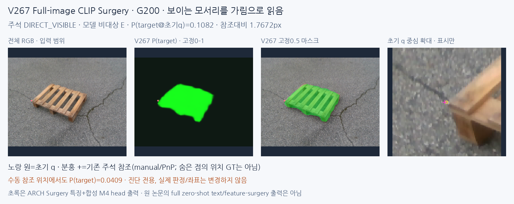
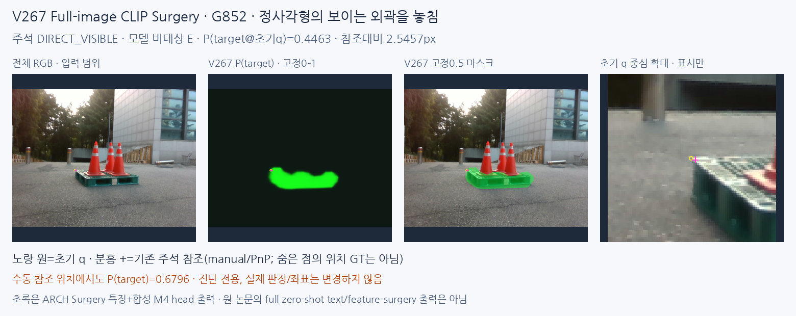
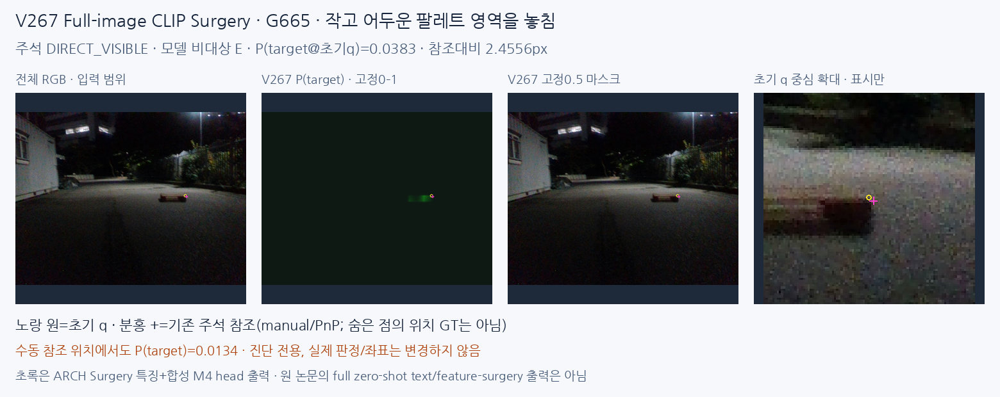
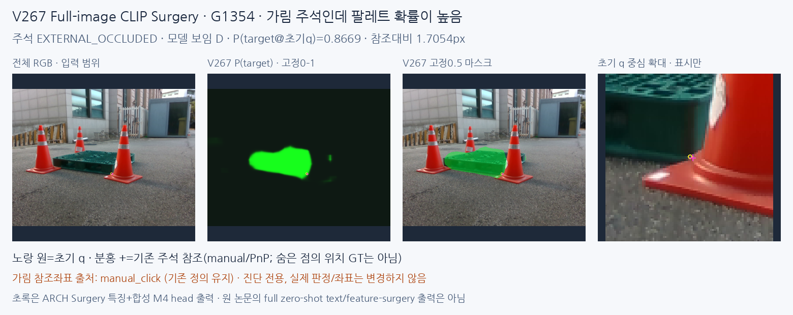
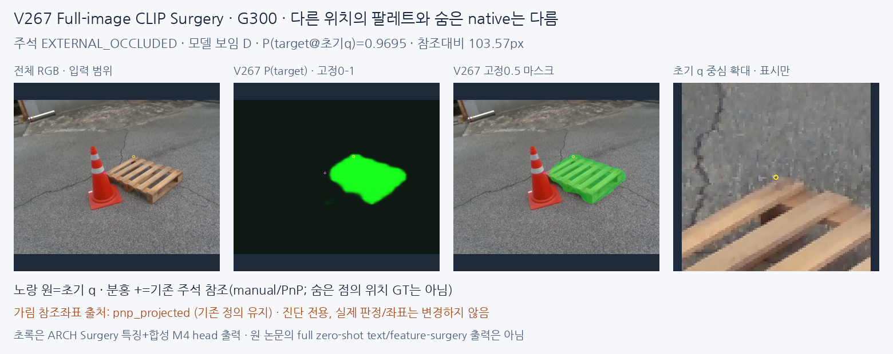

보류한 것은 이 지도 한 지점의 값으로 native 보임/외부 가림을 확정하는 방식입니다. 전체 팔레트 영역을 잘 찾은 사례도 모서리 판정은 틀릴 수 있습니다. 아래는 새 V268 RGB 보정 모델이 아닌, 사용자가 좋아 보인다고 한 V267 결과만 보여줍니다.
원래 PRIMARY에서 D1147중595보임/552비대상, E90중84비대상/6보임입니다. 입력 crop 없이 전체 영상부터 처리했고 초기 q는 지도 저장 뒤 읽습니다. 자기 가림은 별도입니다. 실사 픽셀 GT는 없으므로 픽셀 분할이 맞다/틀리다를 모두 확정하지 않습니다.
새 보정 비교 전체 · DeCLIP/DCLIP 공식 자료 확인 · 수동 좌표 진단
초기오차≤3px 수동D 376점: 원래q에서 D194, 수동 참조좌표를 넣은 평가용 oracle에서는 D200; 그 좌표에서도 E176입니다. 이는 GT를 쓰는 진단이며 새 성능/보정 방식이 아닙니다.





영역 표현의 실패(작고 어두운 대상/가림 경계 번짐), 초기 좌표가 다른 표면에 놓이는 문제, 픽셀 존재와 특정 코너 보임 목표의 차이가 함께 있습니다. CLIP 영역 앞단을 유지하면서 뒤의 native 판단을 개선할 이유이며, 전체 모델을 버려야 한다는 결론이 아닙니다.